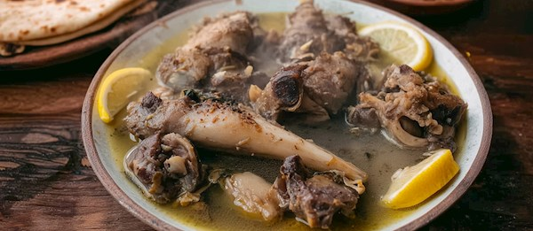

Kaleh Pache
Home

Description
Famous Iranian dish, comprised of sheep's head and feet. Many nutritional benefits,
and with such great flavor the time taken making this dish will be worth it!
Ingredients
- 2 sheep heads
- 10 sheep tongues
- 10 sheep feet
- 4 carrots
- 2 large onions
- 1 large garlic bulb
- 3 cinnamon sticks
- 2 tsp tumeric
- 1 tsp black pepper
- 1 tsp salt + extra to taste
- Cinammon powder to serve
- Bread to serve
Steps
- Parboil the Kaleh Pacheh and drain the water
- Prep the vegetables
- Cook the Kaleh Pacheh
- Serve the Kaleh Pacheh